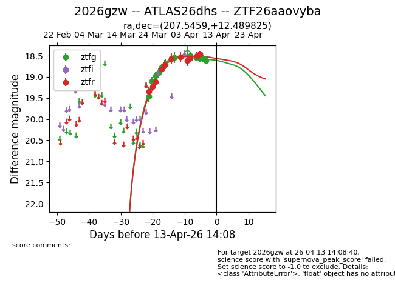
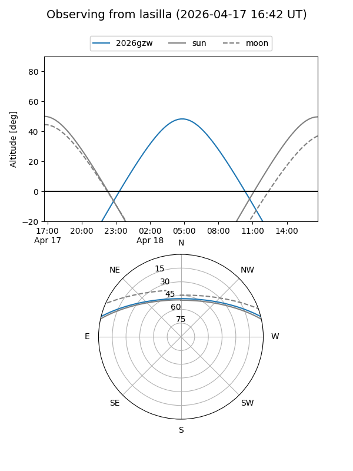
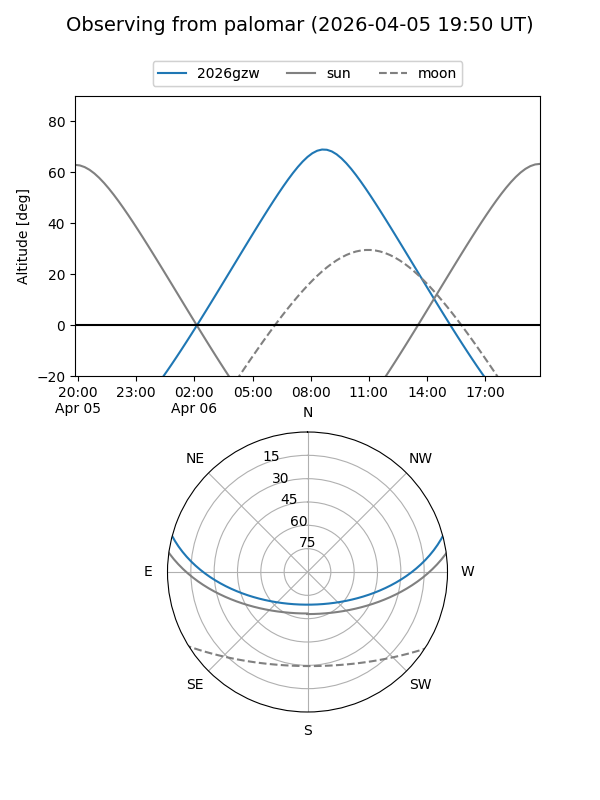

2026gzw
Target 2026gzw at 2026-04-13 14:18
Aliases and brokers:
FINK: link
Lasair: link
ALeRCE: link
TNS: link
YSE: link
alt names
ZTF26aaovyba (ztf,fink_ztf)
2026gzw (tns,yse)
ATLAS26dhs (atlas)
Coordinates:
equatorial (ra, dec) = 207.5459,+12.48982
equatorial (HMS+DMS) = 13:50:11.02,+12:29:23.37
galactic (l, b) = (349.0355,+69.90931)
Flags:
Photometry:
last ztfg=18.61, ztfr=18.46
13 ztfg, 11 ztfr detections
Lightcurve

Visibility


Additional plots